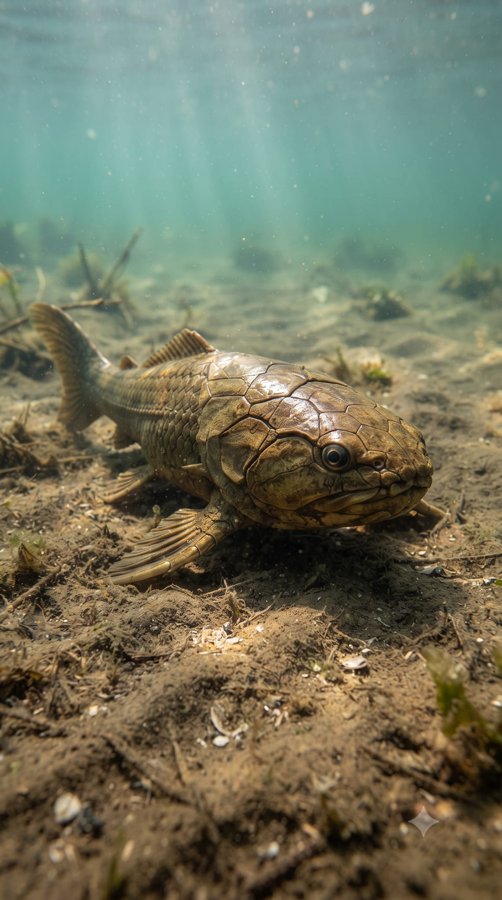
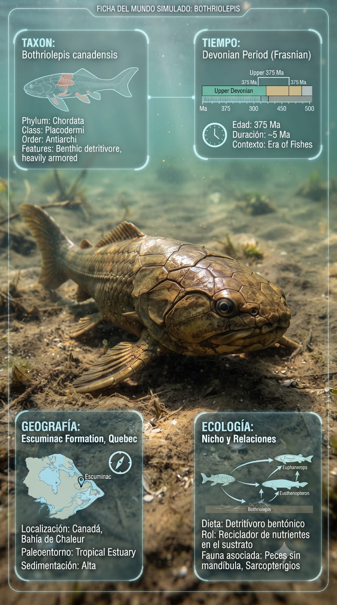

Paleoficha de Bothriolepis




Periodo: Devónico Superior
Edad: Hace aproximadamente 370 millones de años.
Dieta: Detritívoro.
Distribución: Formación Escuminac, Quebec (Canadá).
TAXÓN:
Bothriolepis canadensis (Placodermi, Antiarchi). Pez acorazado de pequeño tamaño con una robusta coraza ósea y aletas pectorales articuladas adaptadas al desplazamiento sobre el fondo.
TIEMPO:
Devónico Superior (Frasniense), hace aproximadamente 370 millones de años.
GEOGRAFÍA:
Formación Escuminac, Quebec (Canadá), en el paleocontinente Euramérica. Ecosistemas de estuarios y llanuras deltaicas con abundante sedimentación.
ECOLOGÍA:
Vivía en aguas tranquilas ricas en sedimentos y materia orgánica. La vegetación circundante estaba dominada por Archaeopteris y licófitos. Compartía el ecosistema con Eusthenopteron, Elpistostege, crustáceos y pequeños euriptéridos. Su coraza ventral plana y sus aletas articuladas le permitían desplazarse eficazmente sobre fondos fangosos mientras procesaba detritos.
CLIMA:
Wm9 (Pantanoso). Ambiente húmedo, de baja oxigenación en el fondo y gran estabilidad ecológica.
ESTADO ECOLÓGICO:
Estable. Representa uno de los placodermos más exitosos y ampliamente distribuidos del Devónico, especializado en la explotación de los fondos sedimentarios.
Vídeo PalEntropía:
▶ Ver Short en YouTube